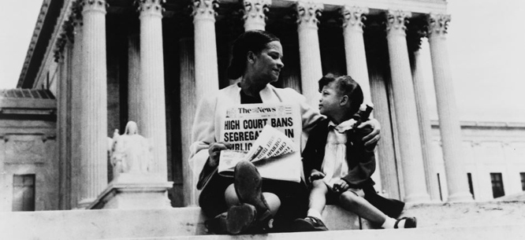

IntroductionThe following web-page will attend to the details of the 1896 Brown vs. Board of Education case in which the Supreme Court ruled that separating children in public schools based on any race or basis of race was deemed unconstitutional. The end of legalized racial segregation in the schools of the United State. This case it ultimutly overruled the 1856 case: Plessy vs. Ferguson- which ruled schools could operate under the "Seprate but Equal" principle.ArgumentsThe plaintiff in the case was Oliver Brown. He was a well known pastor in Topeka, Kansas. He attempted to enroll his daughter Linda Brown into a public school, mostly then known as a "white school". Oliver wanted to do this because it was closer to the Brown's home. The school board refused this attempt in making school equal and not seprate. This then insussed the NAACP to take intrest and action . The NAACP chose the Brown family in veiw that they would appear to be the the most sympathetic plaintiff. That is why the case is so famously known as called Brown v. Board of Education of Topeka, even though the case involved plaintiffs in multiple states.Brown vs. Board argued that such segregation violated the Equal Protection Clause of the Fourteenth Amendment which details that NO state can “deny to any person within its jurisdiction the equal protection of the laws." The case was the outcome of decades of work done by the NAACP(National Association for the Advancement of Colored People) Several other related cases were brought before the Supreme Court. African American students had been denied being admitted into certain public schools due to previous rules/laws which allowed public education to be segregated by race (Plessy vs Ferguson). Brown vs. Board argued that such segregation violated the Equal Protection Clause of the Fourteenth Amendment.
As the Board Argued their cases main arguments were in refrence to the breakdown in the Plessy decision of 1896. They argued that they had in potentially fufilled the principle that “equal facilities/schools" was already in motion. Finally they argued that discrimination by race "did not harm children." The school board had argued that , when the states ratified the Fourteenth Amendment - they did not intend for it to prohibit school segregation. The case was the outcome of decades of work done by the NAACP(National Association for the Advancement of Colored People) Several other related cases were brought before the Supreme Court. Thurgood Marshall, also know as the head of the NAACP Legal Defense and Educational Fund- served the plaintiffs as chief attorney. SCOTUS DecisionAt first, the decisions were divided on which way to rule on school segregation and bias. A main cause for the division liaed with Chief Justice Fred M. Vinson ready fast on the beleive that the Plessy verdict should indeed stand. Then in September 1953, before Brown v. Board of Education was presented in court, Vinson died, and President Dwight D. Eisenhower replaced him with Chief Justice Earl Warren.The Supreme Court held that “Separate but equal” facilities, "Are inherently unequal and violate the protections of the Equal Protection Clause of the Fourteenth Amendment." The Court then argreed through disscusion and review, that the segregation of public education based on race prompted inferiority that currently and potentialy had a detrimental effect on education & devlopment of the African American youth. The decision also used language that was relatively easier for the average human or non-lawyers due to the fact that Warren felt it was necessary for all Americans to understand the decisons and the logic behind it. By overturning Plessy v Ferguson, the Court put a ending to America's long 58 years practice of legal racial segregation and paved the way for the integration of America's public school systems. In May 1955, the Court issued a second opinion in the case (known as Brown v. Board of Education II), which remanded future desegregation cases to lower federal courts and directed district courts and school boards to proceed with desegregation “with all deliberate speed  |